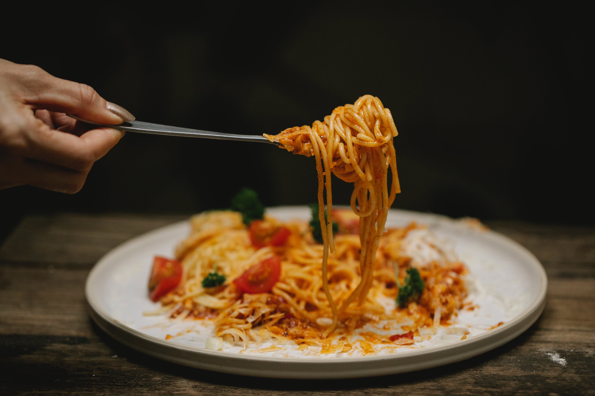

Spagetthi Bolognese
Spagetthi Bolognese
Ingredients:
- 400g spaghetti
- 500g ground beef
- 1 onion, finely chopped
- 2 cloves garlic, minced
- 1 can (400g) crushed tomatoes
- 2 tablespoons tomato paste
- 1 teaspoon dried oregano
- 1 teaspoon dried basil
- Salt and pepper to taste
- Grated Parmesan cheese for serving
Instructions:
- Cook spaghetti according to package instructions.
- In a large pan, cook the ground beef over medium heat until browned. Drain excess fat.
- Add chopped onion and garlic to the pan and cook until softened.
- Stir in crushed tomatoes, tomato paste, oregano, basil, salt, and pepper. Simmer for 15-20 minutes.
- Serve the Bolognese sauce over cooked spaghetti and sprinkle with Parmesan cheese.